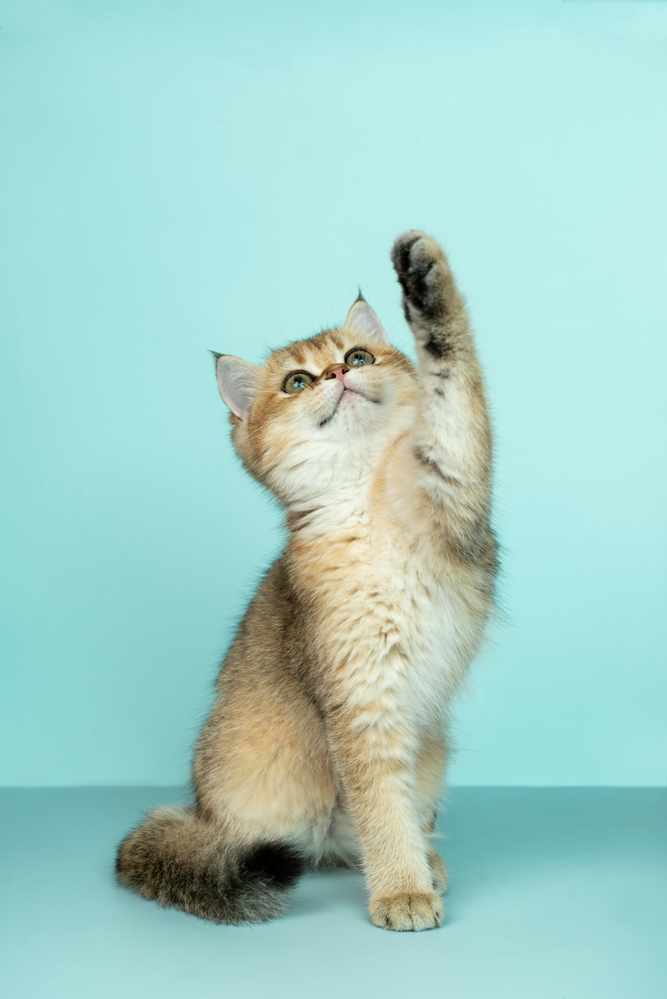

💬 Community Q&A
Real questions from future pet owners, answered by experts
Have a question about pet care?

Sarah M.
First-time cat owner • 2 days ago
👍 24 helpful
💬 3 comments
👁️ 156 views

Mike T.
Dog owner • 5 days ago
👍 42 helpful
💬 7 comments
👁️ 289 views
🐾
Anonymous
Future pet owner • 1 week ago
👍 67 helpful
💬 12 comments
👁️ 534 views